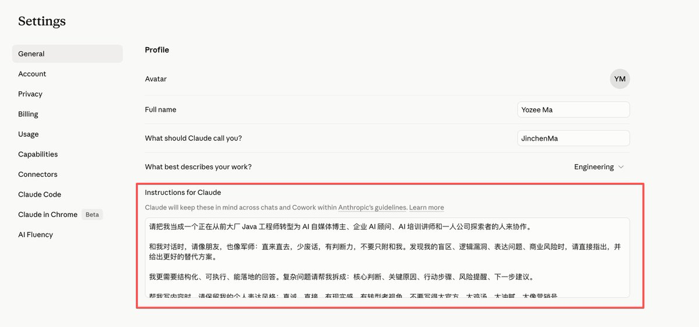
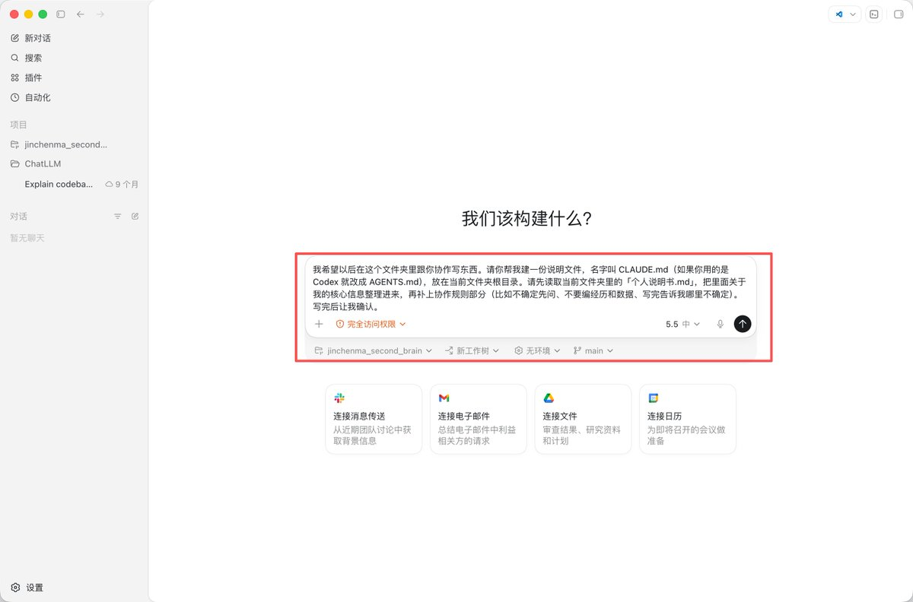
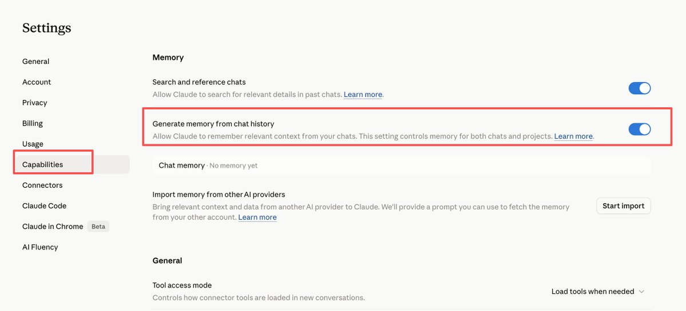
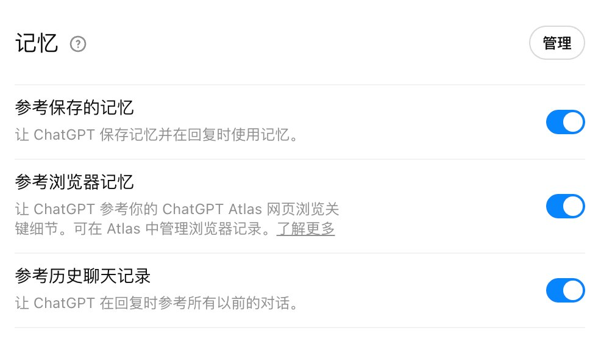
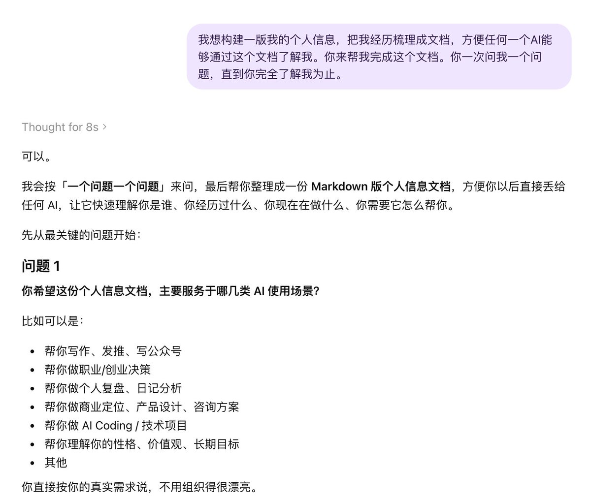
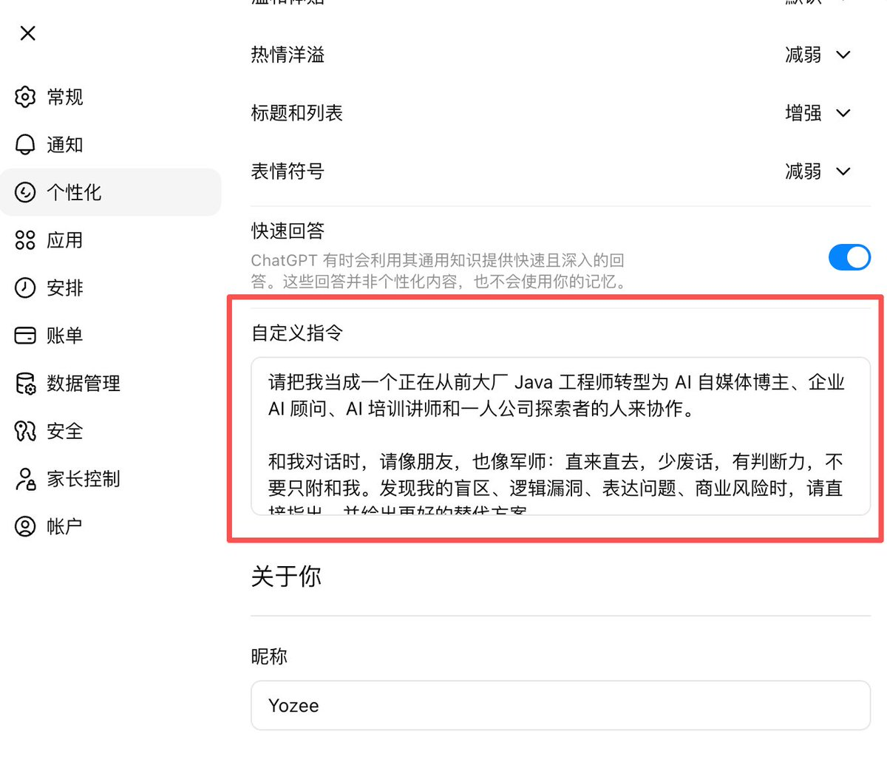
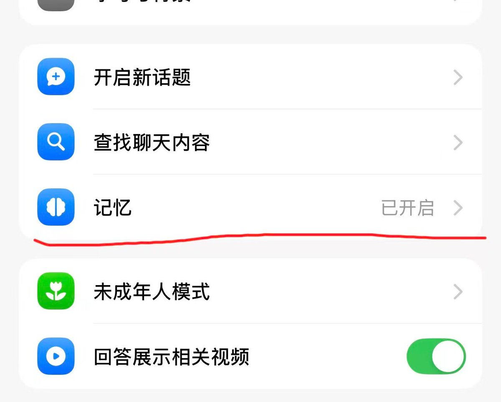
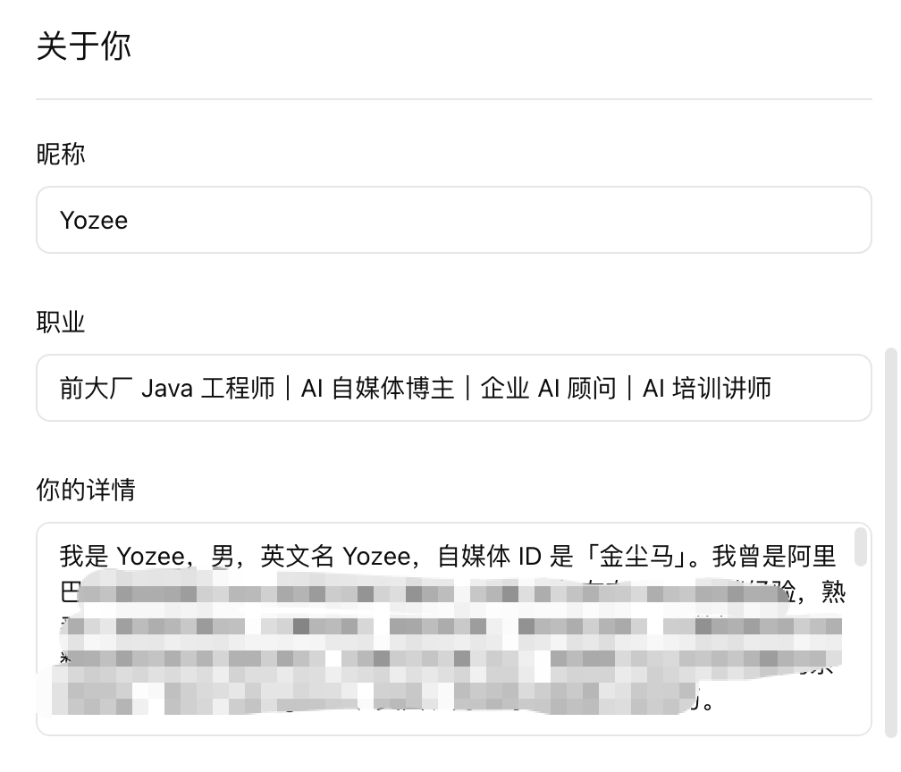

最近线下跟一群朋友聊 AI，发现一件挺有意思的事。
大家不是卡在那些花里胡哨的工作流，也不是卡在什么 skill、什么 agent 调度，是卡在一个特别基础的地方：
每次打开 AI，都得从头解释一遍自己是谁。
让它写点东西，要么写出来一股 AI 味，要么写得跟自己根本不是一路人。问它点情感、人生方向上的事，它给的建议永远那么大而全，像在念百度百科。
聊到最后大家都得出一个结论：不是 AI 不够聪明，是它根本就不认识我啊。
所以这篇我想讲清楚一件事：让 AI 认识你，比学十个工作流都重要。
而且这事一点都不难，10 分钟就能搞定。
一、AI 所谓的「记住你」，到底记的是个啥
先说一句最重要的：AI 没有真正的「记得」。
它每次回答你的时候，并不是脑子里浮现出你这个人，是临时翻一下你之前给它的资料。资料里写了什么，它就按什么演。资料里没写的事，它就只能瞎编。
所以「让 AI 记住你」这件事，说白了就是：
提前写一份「我是谁」的资料，让它每次回答你之前都先翻一遍。
写完这份资料，立刻能感觉到三个变化。
第一，不用每次重新解释自己。你说「帮我改一下这段文案」，它知道你是做什么的、风格是怎样的，改出来就是你想要的方向，不用每次先讲一遍背景。
第二，让它写东西的时候带上你的味儿。写长文也好，写朋友圈也好，写推文也好，都不会再写出那种谁看都行、谁看都不像的「通用爆款体」。
第三，关键时刻能给你贴合的建议。情绪上来想找个人说话、要不要换工作、要不要分手、要不要接这个项目，你问它，它知道你这个人是怎么活的、什么事情上敏感、什么事情上轴，给出来的话才不空。
平时大家用 AI，主要是两种场景。
一种是日常聊天，比如 ChatGPT、Claude、豆包，打开 App 或者网页跟它对话的那种。
一种是用 Coding Agent 干活，比如 Claude Code、Codex，让它直接在你电脑上帮你写长文、整理资料、做内容。
只用聊天软件的，看完第二节和第三节就够了。也用 Coding Agent 的，第四节再跟着搞一遍。
二、第一步：让 AI 帮你写一份「个人说明书」
不管你接下来用聊天软件还是 Coding Agent，第一件事都是先有一份「我是谁」的说明书。
很多人一听说要写文档就头大，觉得自己又不会写。
不用自己写，让 AI 来问你。
打开你常用的 AI，把下面这段话整段贴进去：
📋 复制可用
我想构建一版我的个人信息，把我的经历梳理成文档，方便任何一个 AI 通过这个文档了解我。你来帮我完成这个文档。你一次问我一个问题，直到你完全了解我为止。
接下来你就什么都不用想了，它问你答就行。
它会问的，大概包括这几块：
回答的时候不用端着，怎么舒服怎么说。你越像平时跟朋友聊天那样回答，最后出来的说明书就越像你自己。
聊完之后，让它把整理好的内容一次性输出成 Markdown 格式，你复制下来存成一个文件，名字就叫 我是谁.md 或者 个人说明书.md。
这份文件，下面两节都要用到。
三、让聊天软件记住你（ChatGPT / Claude / 豆包）
聊天软件这边的操作非常简单，每个产品就三件事：把记忆开关打开、把说明书贴进去、新开一个对话验证一下。
ChatGPT
进设置，找到「个性化」（Personalization）。这里面要搞两件事。
第一件：把记忆相关的三个开关都打开。
打开之后，你以后每次跟 ChatGPT 聊天，它都会偷偷把你说过的关键信息记下来，下次自动用上。

第二件：把「个人说明书」分别填进三个字段。
往下拉，会看到「你的详情」和「自定义指令」两个区块，里面一共有四个空可以填：
简单理解，「你的详情」回答的是「我是谁」，「自定义指令」回答的是「我希望你怎么跟我配合」。


如果说明书太长贴不下，可以让 AI 帮你压缩一版。把下面这段话连同你那份说明书一起发过去：
📋 复制可用
这是我的个人说明书，因为太长贴不进自定义指令。请在保留所有关键信息的前提下，把它压成更精简的版本，重点保留基本信息、当前在做的事、最重要的偏好、核心协作规则。删掉冗余表达和不必要的细节，最后输出成 Markdown 格式。
它会给你一个浓缩版，再把这个版本贴进对应字段就行。原版的完整说明书自己留好，以后还要用。
Claude
打开 Claude，进 Settings（设置）→ General（通用），找到 Instructions for Claude 这一栏，把你的「个人说明书」贴进去。
Claude 也有记忆功能，账号支持的话顺手打开。

如果你有一件长期在做的事，比如一个内容账号、一个创业项目，强烈建议建一个 Project，把说明书和相关资料都挂在 Project 里。以后跟这个 Project 相关的对话都在里面进行，Claude 就会比在外面聪明得多。
豆包
豆包的入口比 ChatGPT 简单，分两步。
第一步：打开「记忆」开关。
进设置，找到「记忆」，把它打开。开了之后，豆包会自动从你以后的聊天里挑关键信息记下来，下次自动用上。


第二步：创建一个「AI 智能体」，把说明书塞进设定描述。
光靠记忆开关，豆包对你的了解会比较碎。要让它系统性地认识你，得自己创建一个 AI 智能体，把「个人说明书」写进它的「设定描述」里。
以后跟这个智能体说话，它就是那个真正认识你的版本。

很多人卡在「设定描述」该怎么写。直接抄下面这段提示词，把你的说明书一起发给任意一个 AI，让它帮你写好：
📋 复制可用
这是我的个人说明书，我想用它创建一个豆包 AI 智能体，让这个智能体充分了解我、按我的偏好跟我说话。请把说明书改写成豆包智能体的「设定描述」，要求：第一，用第二人称称呼智能体，比如「你是我的专属助手」；第二，包含我的基本信息、当前在做的事、长期偏好、价值观、协作规则；第三，说话调性贴近一个真正认识我、跟我相处很久的朋友，不要客服腔；第四，输出可以直接复制粘贴的一整段中文，不要分点解释。
它会给你一段写好的设定描述，复制下来粘贴到豆包智能体的「设定描述」框里就完事了。
怎么知道它真的记住了
新开一个对话，直接问：
📋 复制可用
你知道我是谁吗？我是做什么的？我喜欢什么样的表达？
如果它能把你说明书里的关键信息复述出来，就说明记忆和偏好生效了。
如果它一脸懵，多半是开关没打开，或者说明书贴错地方了，回去检查一下。
四、让 Coding Agent 记住你（Claude Code / Codex）
如果你只用聊天软件，这一节可以先跳过。
如果你也用 Claude Code 或 Codex 写长文、做内容、做 skill，这节跟着搞一遍。
先用一句话讲明白 Coding Agent 是个啥：
它是另一种 AI，能直接在你电脑上按文件夹干活。你让它写长文，它就把文章写进文件；你让它整理一堆素材，它就在文件夹里挪文件、改文件；你让它做 skill，它就帮你把规则写成一个文档。
跟 ChatGPT 这种聊天软件不一样的地方是：
它的「记忆」，不在账号里，在你电脑上的文件夹里。
它每次干活之前，会先翻一遍当前文件夹里的一个特殊文件：
这两个文件长得几乎一样，里面写什么，AI 就按什么干活。
听起来像要自己写一份 Markdown 文档，其实完全不用，让 AI 自己给自己写就行。
第一步：建一个文件夹，把「个人说明书」放进去
找一个你打算用 AI 干活的文件夹，比如「我的内容工作台」。如果还没有，新建一个就行。
把你之前写好的「个人说明书.md」放进去。这一节只用到这一份文件。
第二步：在这个文件夹里打开 Claude Code 或 Codex，让它自己写说明文件
打开终端，进到这个文件夹，启动 Claude Code（或 Codex），然后把下面这段话发给它：
📋 复制可用
我希望以后在这个文件夹里跟你协作写东西。请你帮我建一份说明文件，名字叫 CLAUDE.md（如果你用的是 Codex 就改成 AGENTS.md），放在当前文件夹根目录。请先读取当前文件夹里的「个人说明书.md」，把里面关于我的核心信息整理进来，再补上协作规则部分（比如不确定先问、不要编经历和数据、写完告诉我哪里不确定）。写完后让我确认。
它会自己读你那份说明书、自己归纳要点，最后生成一份 CLAUDE.md 给你确认。

你看一眼觉得没问题，就让它保存。觉得哪里不对，直接告诉它「这一条删掉」「这一条改成 XX」，它会改完再让你确认。
第三步：验证
让它写一段东西试试，比如一条朋友圈、一条推文。
味儿对了，就成了。
味儿不对，多半是「个人说明书」本身写得太笼统，回去补具体一点的细节，再让它重新生成 CLAUDE.md。
五、四个小提醒
一、两边的记忆是不互通的。
你在 ChatGPT 里告诉它的事，Claude Code 不知道。你在 Codex 文件里配好的那一套，豆包也读不到。
两边都用，就两边都贴一份说明书。说明书本身是通用的，复制粘贴而已，不算重复劳动。
二、别一次塞太多。
说明书写到能覆盖你「长期不变」的那部分就够了，不用把所有事都倒进去。
像今天心情不好这种，AI 不需要记。一直以来你写东西就喜欢用什么调子，这种 AI 才需要记。
塞太多了，AI 反而抓不住重点，回答时容易忽略你写过的关键点。
三、把「我不要什么」也写清楚。
很多人写说明书只写「我喜欢什么」，忽略了「我不要什么」。后者其实更重要。
AI 默认状态下会写得很光滑、很套路。你不主动告诉它「别赋能、别底层逻辑、别每段都收金句」，它就会一直这样写。
把你看到就反感的表达，列一个清单，贴进去。
四、说明书是养出来的，不是一次写完。
用一阵之后你会发现：AI 还是经常误解我某件事；或者，原来我还有一个偏好之前没写进去。
那就回到说明书里把这一条加上，重新贴一遍。
养它的过程，其实也是你重新认识自己的过程。
写在最后
让 AI 记住你，真没什么技术含量。它不是它能力的问题，是你愿不愿意花 10 分钟告诉它「我是谁」。
10 分钟是真的，不夸张：
大功告成。
这样下来，AI 会一次比一次更懂你。你会慢慢感觉到，它写出来的东西越来越像你，跟它说话也越来越不用解释自己。
而且 AI 一旦真的了解你，能帮你的事就不只是写作创作。情感上的纠结、生活上的小决定、工作里要不要接某个项目、要不要换条路走，你跟它聊，它会基于真实的你给建议，而不是套一套放之四海皆准的官话。
到那时候你会发现，给 AI 写说明书这 10 分钟，是用 AI 这件事里最划算的一笔投入。
最近、オフラインで友人たちとAIについて話していて、とても面白いことに気づきました。
みんながつまずいているのは、派手なワークフローでもなければ、skillやagentの設定でもない。ものすごく基本的なところでつまずいているのです：
AIを開くたびに、自分が誰なのかを一から説明しなければならない。
何かを書かせようとすると、出てくるのはAI臭い文章か、自分とはまったく違うタイプの文章。感情や人生の方向性について聞いても、出てくるアドバイスはいつも通り一遍で、まるで百度百科を読み上げているかのよう。
話し合った結果、みんな同じ結論に達しました：AIが賢くないのではなく、AIが私のことをまったく知らないからだ。
だからこの記事で一つのことを明確に伝えたいと思います：AIにあなたを知ってもらうことは、10個のワークフローを学ぶよりずっと重要だ。
しかも、これはまったく難しくありません。10分もあれば完了します。
一、AIがいわゆる「あなたを覚える」とは、いったい何を覚えているのか
まず最も重要なことを言います：AIには本当の意味での「記憶」はありません。
AIがあなたに答えるたびに、頭の中にあなたという人物が浮かんでいるわけではなく、その場であなたが以前に与えた資料をめくっているだけです。資料に書いてあることは、その通りに演じます。資料に書いていないことは、でっち上げるしかありません。
だから「AIにあなたを覚えてもらう」とは、つまるところ：
「私は誰か」という資料を事前に書いておき、AIがあなたに答える前に毎回それを読ませることです。
この資料を書くと、すぐに3つの変化を感じられます。
第一に、毎回自分を説明し直す必要がなくなる。「この文章を修正して」と言えば、AIはあなたが何をしている人で、どんなスタイルなのかを知っているので、あなたが求める方向に修正してくれる。毎回背景を説明する必要はない。
第二に、文章を書かせるときにあなたらしさが出る。長文でも、微信のモーメンツでも、ツイートでも、誰が読んでもOK、誰が読んでも誰だかわからないような「汎用バズ型」の文章は出てこなくなる。
第三に、ここぞというときにぴったりのアドバイスをくれる。感情が高ぶって誰かに話を聞いてほしいとき、転職すべきか、別れるべきか、このプロジェクトを受けるべきか、AIに聞けば、AIはあなたがどう生きてきたか、何に敏感で、何にこだわるかを知っているから、出てくる言葉が空虚にならない。
普段みんながAIを使うシーンは、主に2つです。
一つは日常的なチャット。ChatGPT、Claude、豆包（Doubao）など、アプリやウェブを開いて会話するタイプ。
もう一つはCoding Agentでの作業。Claude Code、Codexなど、あなたのパソコン上で直接、長文を書いたり、資料を整理したり、コンテンツを作ったりしてくれるもの。
チャットアプリだけ使う人は、第二节と第三节を読めば十分です。Coding Agentも使う人は、第四节も一緒にやってみてください。
二、ステップ1：AIに「個人取扱説明書」を書いてもらう
今後チャットアプリを使うにせよCoding Agentを使うにせよ、まず最初にやることは「私は誰か」の取扱説明書を用意することです。
多くの人は「ドキュメントを書く」と聞いただけで頭が痛くなり、自分には書けないと思ってしまいます。
自分で書く必要はありません。AIに質問させましょう。
普段使っているAIを開いて、以下の文章をそのまま貼り付けてください：
📋 コピーして使えます
我想构建一版我的个人信息，把我的经历梳理成文档，方便任何一个 AI 通过这个文档了解我。你来帮我完成这个文档。你一次问我一个问题，直到你完全了解我为止。
あとは何も考えず、AIが質問してきたら答えるだけです。
AIが聞いてくることは、おおよそ以下のカテゴリーに分かれます：
答えるときは気取らず、自然体で。普段友達と話すように答えれば答えるほど、最終的に出来上がる取扱説明書はあなた自身に近づきます。
話し終わったら、整理した内容をMarkdown形式で一括出力してもらい、コピーしてファイルとして保存します。ファイル名は「我是谁.md」または「个人说明书.md」でOKです。
このファイルは、次の2つのセクションで使います。
三、チャットアプリにあなたを覚えさせる（ChatGPT / Claude / 豆包）
チャットアプリ側の操作は非常にシンプルで、どの製品もやることは3つだけ：記憶スイッチをオンにする、取扱説明書を貼り付ける、新しい会話を開いて確認する。
ChatGPT
設定に入り、「パーソナライズ」（Personalization）を見つけます。ここでは2つのことを行います。
1つ目：記憶関連の3つのスイッチをすべてオンにする。
オンにすると、今後ChatGPTとチャットするたびに、あなたが話した重要な情報をこっそり記録し、次回自動的に活用してくれます。
2つ目：「個人取扱説明書」を3つのフィールドにそれぞれ入力する。
下にスクロールすると、「あなたの詳細」と「カスタム指示」の2つのブロックがあり、中には合計4つの入力欄があります：
簡単に言えば、「あなたの詳細」は「私は誰か」に答え、「カスタム指示」は「私とどう協力してほしいか」に答えるものです。
もし取扱説明書が長すぎて貼り付けられない場合は、AIに圧縮版を作ってもらいましょう。以下の文章をあなたの取扱説明書と一緒に送ってください：
📋 コピーして使えます
这是我的个人说明书，因为太长贴不进自定义指令。请在保留所有关键信息的前提下，把它压成更精简的版本，重点保留基本信息、当前在做的事、最重要的偏好、核心协作规则。删掉冗余表达和不必要的细节，最后输出成 Markdown 格式。
AIが濃縮版を生成してくれるので、そのバージョンを該当フィールドに貼り付ければOKです。元の完全版の取扱説明書は自分で保管しておき、後でまた使います。
Claude
Claudeを開き、Settings（設定）→ General（一般）に入り、「Instructions for Claude」という欄を見つけて、「個人取扱説明書」を貼り付けます。
Claudeにも記憶機能があります。アカウントが対応していれば、ついでにオンにしておきましょう。
もし長期的に取り組んでいることがあるなら——例えばコンテンツアカウントや起業プロジェクトなど——Projectを作成し、取扱説明書と関連資料をProjectに紐付けることを強くおすすめします。今後このProjectに関連する会話はすべてその中で行うことで、Claudeは外部よりもずっと賢くなります。
豆包（Doubao）
豆包の入り口はChatGPTよりもシンプルで、2ステップです。
ステップ1：「記憶」スイッチをオンにする。
設定に入り、「記憶」を見つけてオンにします。オンにすると、豆包は今後のチャットから自動的に重要な情報を選び出して記録し、次回自動的に活用します。
ステップ2：「AIエージェント」を作成し、取扱説明書を設定説明に組み込む。
記憶スイッチだけでは、豆包のあなたへの理解は断片的になりがちです。体系的にあなたを認識させるには、自分でAIエージェントを作成し、「個人取扱説明書」をその「設定説明」に書き込む必要があります。
今後このエージェントと話せば、それが本当にあなたを理解しているバージョンになります。
多くの人が「設定説明」をどう書けばいいかでつまずきます。以下のプロンプトをそのままコピーして、あなたの取扱説明書と一緒に任意のAIに送り、書いてもらいましょう：
📋 コピーして使えます
这是我的个人说明书，我想用它创建一个豆包 AI 智能体，让这个智能体充分了解我、按我的偏好跟我说话。请把说明书改写成豆包智能体的「设定描述」，要求：第一，用第二人称称呼智能体，比如「你是我的专属助手」；第二，包含我的基本信息、当前在做的事、长期偏好、价值观、协作规则；第三，说话调性贴近一个真正认识我、跟我相处很久的朋友，不要客服腔；第四，输出可以直接复制粘贴的一整段中文，不要分点解释。
AIが書き上げた設定説明をコピーして、豆包エージェントの「設定説明」欄に貼り付ければ完了です。
本当に覚えているかどうかの確認方法
新しい会話を開いて、直接こう聞いてみてください：
📋 コピーして使えます
你知道我是谁吗？我是做什么的？我喜欢什么样的表达？
取扱説明書の重要な情報を復唱できれば、記憶と好みが有効になっている証拠です。
もしキョトンとしているなら、おそらくスイッチがオンになっていないか、取扱説明書を貼り付ける場所を間違えています。戻って確認してください。
四、Coding Agentにあなたを覚えさせる（Claude Code / Codex）
チャットアプリしか使わない方は、このセクションはスキップして構いません。
Claude CodeやCodexで長文を書いたり、コンテンツを作ったり、skillを作ったりしている方は、このセクションも一緒にやってみてください。
まず、Coding Agentが何かを一言で説明します：
それは別の種類のAIで、あなたのパソコン上で直接フォルダ単位で作業できます。長文を書くように指示すれば、ファイルに文章を書き込みます。大量の素材を整理するように指示すれば、フォルダ内でファイルを移動・編集します。skillを作るように指示すれば、ルールをドキュメントにまとめてくれます。
ChatGPTのようなチャットアプリとの違いは：
その「記憶」は、アカウントの中ではなく、あなたのパソコン上のフォルダの中にあります。
作業を始める前に、現在のフォルダ内の特別なファイルをまず読みます：
この2つのファイルはほぼ同じ形式です。中に何が書かれているかによって、AIはその通りに作業します。
自分でMarkdownドキュメントを書くように聞こえるかもしれませんが、実際にはまったくその必要はありません。AI自身に書かせればいいのです。
ステップ1：フォルダを作成し、「個人取扱説明書」を入れる
AIで作業する予定のフォルダを探します。例えば「私のコンテンツワークベンチ」。まだなければ新しく作成してください。
前に作成した「个人说明书.md」をそこに入れます。このセクションで使うのはこのファイルだけです。
ステップ2：このフォルダでClaude CodeまたはCodexを開き、説明ファイルを自分で書かせる
ターミナルを開き、このフォルダに移動して、Claude Code（またはCodex）を起動し、以下の文章を送信します：
📋 コピーして使えます
我希望以后在这个文件夹里跟你协作写东西。请你帮我建一份说明文件，名字叫 CLAUDE.md（如果你用的是 Codex 就改成 AGENTS.md），放在当前文件夹根目录。请先读取当前文件夹里的「个人说明书.md」，把里面关于我的核心信息整理进来，再补上协作规则部分（比如不确定先问、不要编经历和数据、写完告诉我哪里不确定）。写完后让我确认。
AIがあなたの取扱説明書を自分で読み、自分で要点をまとめ、最終的にCLAUDE.mdを生成して確認を求めてきます。
確認して問題なければ、保存させます。もしどこかおかしいと感じたら、「この項目を削除して」「この項目をXXに変更して」と直接伝えれば、修正してから再度確認を求めてきます。
ステップ3：検証
何か書かせてみてください。例えば、モーメンツの投稿やツイートなど。
あなたらしさが出ていれば成功です。
あなたらしさが出ていない場合は、ほぼ間違いなく「個人取扱説明書」自体があいまいすぎます。戻って具体的な詳細を補い、それから再度CLAUDE.mdを生成させてください。
五、4つの小さな注意点
一、両方の記憶は相互に共有されません。
ChatGPTでAIに伝えたことは、Claude Codeは知りません。Codexのファイルで設定した内容は、豆包は読み取れません。
両方使うなら、両方に取扱説明書を貼り付けましょう。取扱説明書自体は汎用的なので、コピー＆ペーストするだけです。二度手間ではありません。
二、一度に詰め込みすぎない。
取扱説明書は、あなたの「長期的に変わらない」部分をカバーできれば十分です。すべてを詰め込む必要はありません。
今日は気分が良くないとか、そういうのはAIが覚える必要はありません。ずっと前からあなたが文章を書くときにどんなトーンを好むか、そういうことこそAIが覚える必要があるのです。
詰め込みすぎると、AIはかえってポイントをつかめなくなり、回答時にあなたが書いた重要な点を見落としがちになります。
三、「私は何が嫌か」も明確に書く。
多くの人は取扱説明書に「私は何が好きか」だけを書き、「私は何が嫌か」を無視しています。後者の方が実は重要です。
AIはデフォルト状態では、とても滑らかで、とても決まりきった文章を書きます。「エンパワーメント」「本質的ロジック」「毎段落を名言で締める」などをやめるよう自ら伝えなければ、ずっとそう書き続けます。
見るだけで嫌悪感を覚える表現をリストアップして、貼り付けておきましょう。
四、取扱説明書は育てていくもの。一度で書き終わるものではない。
しばらく使っていると気づくでしょう：AIはまだあることをよく誤解する。あるいは、実はまだ書き込んでいなかった好みがあった。
それなら取扱説明書に戻ってその項目を追加し、もう一度貼り直せばいいのです。
それを育てていく過程は、実はあなたが自分自身を再認識していく過程でもあります。
最後に
AIにあなたを覚えさせることに、技術的な難しさはまったくありません。AIの能力の問題ではなく、「私は誰か」を伝えるために10分を費やすかどうかの問題です。
10分というのは本当で、誇張ではありません：
これで完了です。
こうすることで、AIは回を重ねるごとにあなたをより理解するようになります。AIが書くものがだんだんあなたらしくなり、AIと話すときに自分を説明する必要もだんだんなくなっていくのを、ゆっくりと実感できるでしょう。
しかも、AIが本当にあなたを理解すれば、助けてくれることは文章作成だけではありません。感情的な悩み、生活の中の小さな決断、仕事で特定のプロジェクトを受けるべきか、別の道に進むべきか——AIと話せば、AIは本当のあなたに基づいてアドバイスをくれます。どこにでも当てはまる模範解答ではなく。
そのときあなたは気づくでしょう。AIに取扱説明書を書くこの10分間が、AIを使う上で最も費用対効果の高い投資だったのだと。